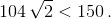

Problem ID 86120
A board of size $2005\times2005$ is divided into square cells with a side length of 1 unit. Some board cells are numbered in some order by numbers 1, 2, ... so that from any non-numbered cell there is a numbered cell within a distance of less than 10. Prove that there can be found two cells with a distance between them of less than 150, which are numbered by numbers that differ by more than 23. $($The distance between the cells is the distance between their centres$)$.
Solution
Consider on the board a large chequered square with side 105. We divide it into 25 smaller squares of $21\times21$. A numbered cell, located at a distance of less than 10 from the central cell of the small squares, is in that same small square. Since small squares do not intersect, then in a large square there are at least 25 numbered cells. The smallest of the numbers in them must differ from the largest by more than 23. The corresponding two cells are located at a distance of less than 150, because they lie in the same large square, and the distance between the most distant cells is equal to

Solution
k = 1991